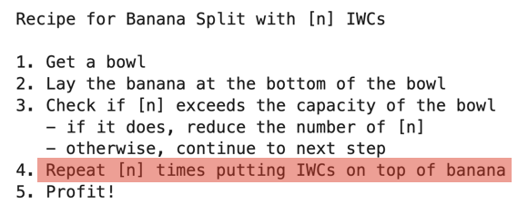

Iterating#
Using the recipe as an analogy, we can see that there is a step that requires repeating the action of putting [n] number of ice-cream, whipped cream, cherry (IWC) portions onto the banana

Iteration or looping allows us to
go through a data structure one element at a time (e.g. sequence/vector/list)
repeat the execution of a piece of code until all the elements have been covered
This allows us to simplify writing code that performs repeated operations
Data preparation#
To illustrate the use of iteration/looping, we will use an example data frame with patient data
df <- data.frame(id=c(20201,20205,20212,20213,20216),
age=c(19,45, 23, 55, 65),
name=c("Alice","Bob","Charlie","David", "Eliza"),
risk=c("low", "med", "high", "high","med"))
df
| id | age | name | risk |
|---|---|---|---|
| <dbl> | <dbl> | <chr> | <chr> |
| 20201 | 19 | Alice | low |
| 20205 | 45 | Bob | med |
| 20212 | 23 | Charlie | high |
| 20213 | 55 | David | high |
| 20216 | 65 | Eliza | med |
Let us take patient from the data frame and use the conditional statement to determine whether the patient should be admitted or reviewed later
# select by row index
person <- df[3,] # David
person
| id | age | name | risk | |
|---|---|---|---|---|
| <dbl> | <dbl> | <chr> | <chr> | |
| 3 | 20212 | 23 | Charlie | high |
# combining comparisons into single if statement
if (person$age >50 | person$risk=="high") {
print("admit")
} else {
print("review later")
}
[1] "admit"
What if we want to repeat the action for all the patients in the dataframe?
We could do it manually by repeating the code and changing the
personvariable for each patientWe could automate it using iteration/looping statements
Iterating/looping using the for statement#
We use the for statement to iterate through a data structure containing multiple elements
For each iteration, the contents of the current element of the data structure are assigned to the variable in the for statement
The variable name can be chosen to represent a unit from the data structure that is being iterated upon e.g.
index(variable) insequence(sequence)patient(variable) inpatient_list(list)name(variable) inpatient_names(vector)
The contents of the variable stay within the
{ do something }block and be used for operations

1. Using a sequence#
We can use the start:end syntax to generate a sequence of numbers that can be iterated
num_cases <- nrow(df) # count number of rows (1 row = 1 patient)
for (index in 1:num_cases) { # sequence of numbers from 1 to num_cases
person <- df[index,] # select the patient by the index
if (person$age >50 | person$risk=="high") {
print("admit")
} else {
print("review later")
}
}
[1] "review later"
[1] "review later"
[1] "admit"
[1] "admit"
[1] "admit"
2. Using a vector#
We can iterate through the contents of a vector that contains row a identifier. This could be
rownames(by default, rows are in sequential order 1,2,3…)a
column with unique row identifierin the data frame
The benefit of using the method is that we do not need to generate the sequence of indexes as R will iterate thru the vector
First, let us look at using row names
# using the rownames function to a return a vector of names
rownames(df)
- '1'
- '2'
- '3'
- '4'
- '5'
Now that we have a vector, we can iterate through it and use it to reference each row in the data frame e.g. df[r,] where r = row index
for (row in rownames(df)) {
person <- df[row,] # using row names to index the person
if (person$age >50 | person$risk=="high") {
print("admit")
} else {
print("review later")
}
}
[1] "review later"
[1] "review later"
[1] "admit"
[1] "admit"
[1] "admit"
Instead of using rownames to populate the vector with all the row indexes in the data frame, we can specify selective row indexes in the vector
For example we would like to select patients under our care (rows 1,2,5)
# manually specifying the rows in a vector
patients_in_my_care <- c(1,2,5)
for (patient in patients_in_my_care) {
person <- df[patient,]
if (person$age >50 | person$risk=="high") {
print("admit")
} else {
print("review later")
}
}
[1] "review later"
[1] "review later"
[1] "admit"
We can also use a unique row identifier from the data frame. Here, we can use the id column containing unique identifiers for each patient
To do this, we need to populate the vector with the identifiers from the data frame (
id)In the loop, the each
idvalue is used to select rows from the data frame
# vector of patient identifiers
df$id
- 20201
- 20205
- 20212
- 20213
- 20216
# using a column containing unique identifiers
pt_ids <- df$id
for (pt_id in pt_ids) {
person <- df[df$id == pt_id,] # we will select rows where pt_id matches the id
if (person$age >50 | person$risk=="high") {
print("admit")
} else {
print("review later")
}
}
[1] "review later"
[1] "review later"
[1] "admit"
[1] "admit"
[1] "admit"
Summary#
Repetitive steps can be done using a loop that iterates through a sequence/vector/list
Iteration is defined as
for(element in sequence/vector/list) { code to execute }The first element in a sequence/vector/list is assigned to the variable
element(you can choose any variable name that denotes a single element of interest)When the code block has finished executing, the next element is assigned to the same variable
elementand the code is executed againThe process continues until it reaches the last element in the sequence/vector/list
Exercise - Iteration#
screen_df <- data.frame(id=c(20201,20205,20212,20213,20216),
age=c(19,45, 23, 55, 65),
sysBP=c(120,150,130,65,155),
contact=c(T,F,T,F,F),
cluster=c(T,T,F,T,F))
screen_df
| id | age | sysBP | contact | cluster |
|---|---|---|---|---|
| <dbl> | <dbl> | <dbl> | <lgl> | <lgl> |
| 20201 | 19 | 120 | TRUE | TRUE |
| 20205 | 45 | 150 | FALSE | TRUE |
| 20212 | 23 | 130 | TRUE | FALSE |
| 20213 | 55 | 65 | FALSE | TRUE |
| 20216 | 65 | 155 | FALSE | FALSE |
Repeat the conditional checking for all the patients. Use the id column to iterate through the patients
if systolic BP is less than 80, print “send to ED”
otherwise if patient has contact or stays near a cluster, print “send for screening”
otherwise if patient if older than 65, print “review in 3 days”
if they do no meet any of these criteria, print “review in 1 week”
# start here
Show code cell content
# solution
patient_ids <- screen_df$id
for (patient_id in patient_ids) {
pt <- screen_df[screen_df$id == patient_id, ] # select pt from dataframe using the id
if (pt$sysBP < 80) {
print("send to ED")
} else if (pt$contact==T | pt$cluster ==T) {
print("send for screening")
} else if (pt$age >65) {
print("review in 3 days")
} else {
print("review in 1 week")
}
}
[1] "send for screening"
[1] "send for screening"
[1] "send for screening"
[1] "send to ED"
[1] "review in 1 week"